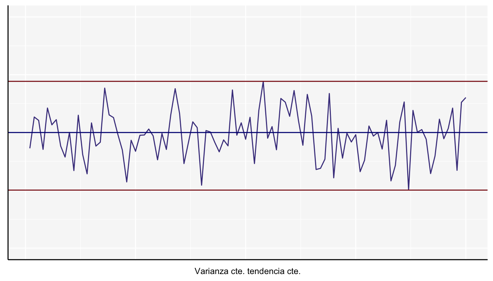
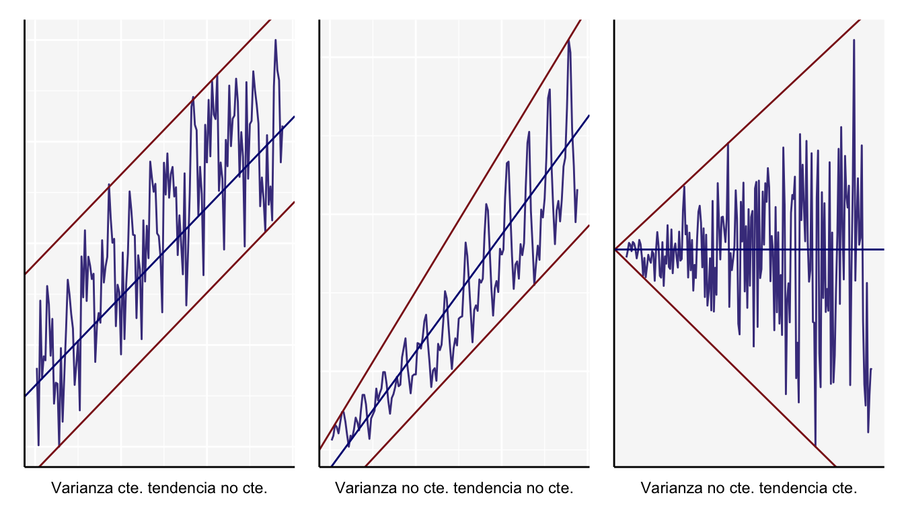

Series de Tiempo
Una serie tiempo es una secuencia de observaciones, medidos en determinados momentos del tiempo, ordenados cronológicamente y espaciados entre sí de manera uniforme (diario, semanal, semestral, anual, entre otros). Por esta razón, los datos usualmente son dependientes entre sí. El principal objetivo de una serie de tiempo (denotada por \(X_{t}\), donde \(t=1,2,...,n\)) es realizar una análisis de los datos para hacer pronóstico del comportamiento de la serie, asumiendo que mantendrá un comportamiento similar al observado.
Se pueden encontrar series de tiempo en diferentes campos de estudio, por ejemplo:
- Economía: Indices de precios mensuales, exportaciones totales mes a mes, tasa de interés semanal.
- Física: Nivel de precipitación diaria, temperatura diaria o mensual.
- Demografía: Tasa de natalidad, tasa de mortalidad, número de habitantes en cierta región.
- Marketing: Ventas diarias o mensuales de la compañía.
El análisis clásico de las series temporales se basa en la suposición de que los valores que toma la variable de observación es la consecuencia de tres componentes, cuya actuación conjunta da como resultado los valores medidos.
Los componentes de una serie de tiempo son:
- Tendencia: La tendencia o tendencia a largo plazo de una serie es por lo común el resultado de factores a largo plazo. En términos intuitivos, la tendencia de una serie de tiempo caracteriza el patrón gradual y consistente de las
variaciones de la propia serie, que se consideran consecuencias de fuerzas persistentes que afectan el crecimiento o la reducción de la misma, tales como: cambios en la población, en las características demográficas de la misma, cambios en los ingresos, en la salud, en el nivel de educación y tecnología. Las tendencias a largo plazo se ajustan a diversos esquemas. Algunas se mueven continuamente hacía arriba, otras declinan, y otras más permanecen igual en un cierto período o intervalo de tiempo.
- Estacionalidad: El componente de la serie de tiempo que representa la variabilidad en los datos debida a influencias de las estaciones, se llama componente estacional. Esta variación corresponde a los movimientos de la serie que recurren año tras año en los mismos meses (o en los mismos trimestres) del año poco más o menos con la misma intensidad. Por ejemplo: Un fabricante de albercas inflables espera poca actividad de ventas durante los meses de otoño e invierno y tiene ventas máximas en los de primavera y verano, mientras que los fabricantes de equipo para la nieve y ropa de abrigo esperan un comportamiento anual opuesto al del fabricante de albercas.
- Componente aleatoria: Esta se debe a factores a corto plazo, imprevisibles y no recurrentes que afectan a la serie de tiempo. Como este componente explica la variabilidad aleatoria de la serie, es impredecible, es decir, no se puede esperar predecir su impacto sobre la serie de tiempo. Existen dos tipos de variación irregular:
- Las variaciones que son provocadas por acontecimientos especiales, fácilmente identificables, como las elecciones, inundaciones, huelgas, terremotos.
- Variaciones aleatorias o por casualidad, cuyas causas no se pueden señalar en forma exacta, pero que tienden a equilibrarse a la larga.
Se puede observar que de los tres componentes, los dos primeros son determinísticos, mientas que la última es aleatoria. Entonces la serie se tiempo se puede expresar como:
\[X_{t}=T_{t}+E_{t}+I_{t}\] donde \(T_{t}\) es el componente de tendencia, \(E_{t}\) el componente de estacionalidad y \(I_{t}\) la componente aleatoria.
Según las características de las series de tiempo estas pueden clasificarse en:
Estacionarias: Una serie de tiempo estacionaria es estable a lo largo del tiempo, es decir su media, varianza y autocovarianza (en diferentes rezagos o diferentes tiempos) son constantes en el tiempo.
Es decir que sin importar el momento en que se midan (invariantes respecto al tiempo) se debe cumplir lo siguiente:
- Media: \(\mathbb{E}(X_t) = \mathbb{E}(X_{t+k}) = \mu\)
- Varianza: \(Var(X_t) = Var(X_{t+k}) = \sigma^2\)
- Covarianza: \(\mathbb{E}[(X_t-\mu)(X_{t+k}-\mu)] = \gamma_k\)
Aquí se muestra un ejemplo en el cual la varianza no cambia a lo largo del tiempo y la media permanece constante

No estacionaria: Son series en las cuales la tendencia y/o variabilidad cambian en el tiempo. Los cambios en la media determinan una tendencia a crecer o decrecer a largo plazo, por lo que la serie no oscila alrededor de un valor constante. Existen muchos casos en este tipo de series, aquí se muestran algunos ejemplos.

Las siguientes gráficas son sólo otro ejemplo basado en el conjunto de datos nottem, en el cual se tienen las temperaturas mensuales promedio en Nottingham entre 1920 y 1939. Esta serie de tiempo tiene el siguiente comportamiento a través de los años.
Las siguientes gráficas representan las componentes antes mencionadas de esta serie de tiempo.